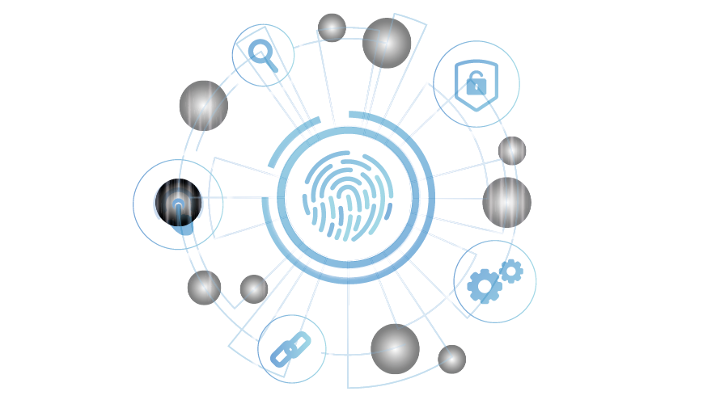

Annual maintenance
Full annual maintenance service for servers and peripherals in a fully LAN or WAN network including software, hardware, and all programs and operating systems
Full annual maintenance service for servers and peripherals in a fully LAN or WAN network including software, hardware, and all programs and operating systems
Security is an important issue for companies in every aspect. For all companies the CCTV cameras, fingerprint devices, smart cards, firewalls, antivirus, computer and server security, etc. are always discussed. The risk of unwanted connections, especially when servers and computers are completely connected to the internet, is always very dangerous.
Technology Friend provides all security services and consulting services.


It is a program or device that protects computers and prevent unwanted access while they are connected to networks and internet.
Technology Friend offers full annual maintenance service for:
1 - It is a program or device that protects computers and prevent unwanted access while they are connected to networks and internet.Large companies or with multiple branches need a system to control the performance of employees in attendance and departure and follow them up in one place in the main center, which will positively affect the general results of the performance of the company as a whole and raise the productivity of employees and this is what we provide to our customers from business owners and companies by connecting the networks of the fingerprint device in the branches With the company’s own systems in the server, synchronizing data between sub and central databases, and operating the cloud system via the Internet
Technology Friend established in 2011 to be one of the specialized companies that providing quality and distinguished services in the field of Cloud servers, Cloud networks and maintenance. to meet the needs of companies and institutions.